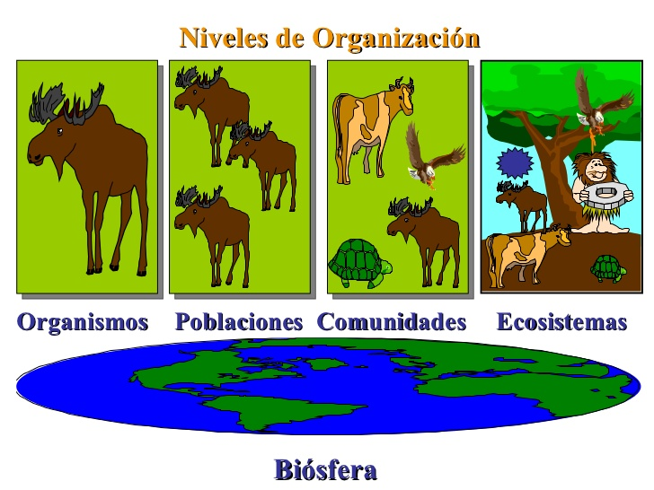
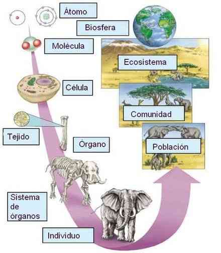

La ecología es la rama de la biología que estudia la relación de los seres vivos con el medio que habitan y cómo influye éste en su distribución, abundancia, biodiversidad, comportamiento, las interacciones entre diferentes especies y las modificaciones que pueden ocasionar en el medio. Su nivel de estudio es a nivel de poblaciones, comunidades, ecosistemas y la biosfera en general.
Suele confundirse con lo que se viene a llamar movimiento ecologista que es más una filosofía de vida que una ciencia. Esta continua confusión presente en los medios y en el lenguaje cotidiano genera algunos problemas a la hora de la comunicación científica y por este motivo es muy importante tener claro qué es la ecología, y qué estudia la ecología pues es una ciencia como tal y no involucra ideología sino que se sustenta en el método científico.
El origen etimológico de esta rama de la biología es del griego oikos que significa hogar y el primer investigador en darle este nombre fue Haeckel en 1869. Algunos eminentes ecólogos han sido Ramón Margalef el más importante ecólogo español y Eugene P. Odum considerado el padre de la ecología moderna.
La vida se agrupa en diversos niveles estructurales bien jerarquizados. Así se sabe que la unión de células pueden dar lugar a un tejido y la unión de éstos dan lugar a un órgano que cumple una función específica y particular, como el caso del corazón o el estómago. De esta forma los diversos niveles de jerarquización de la vida se agrupan hasta formar un organismo o ser vivo, éstos al agruparse siendo de una misma especie forman una población y el conjunto de poblaciones de diversas especies que habitan en un biotopo dado forman una comunidad.
Nivel químico: es el nivel más bajo e incluye todos los átomos y moléculas necesarios para mantener la vida. En total son necesarios átomos de 26 elementos químicos para mantener la vida. Los átomos se combinan para formar moléculas como las proteínas, carbohidratos, grasas y vitaminas. Nivel celular: las moléculas se combinan para formar estructuras en el siguiente nivel de organización: las células. Las células contienen estructuras diferenciadas llamadas orgánulos que tienen funciones muy específicas dentro de las mismas. Existen muchos tipos de células, cada uno de los cuales con una forma y función determinadas. Nivel tisular simple: la agrupación de células con la misma función constituye un tejido simple. Todas ellas surgen de unas células ancestrales comunes que se han especializado en la misma función. Nivel tisular compuesto: varios tipos de células diferentes, con diferente función, se agrupan formando un tejido que tiene una morfología bien diferenciada. Por ejemplo, el tejido epitelial que tapiza la pared del estómago está compuesto de células epiteliales, de células parietales que producen el ácido clorhídrico que se encuentra en el jugo gástrico, de las células mucosas que producen el mucus, la secreción espesa que protege la pared gástrica de su propio jugo y de las células zimógenas que producen las enzimas digestivas Nivel de órgano: estructuras compuestas por varios tejidos, que tienen una función específica y una forma reconocible. El corazón, el estómago, los riñones, etc. son ejemplos de órganos Nivel sistema: varios órganos relacionados que tienen una función común. Por ejemplo, el sistema digestivo, cuya función es utilizar los alimentos como fuente de energía y de materiales desechando los residuos inútiles, consta de boca, faringe, esófago, estómago, intestino delgado e intestino grueso. Otros órganos - como las glándulas salivares, páncreas o vesícula biliar - pueden ayudar a la función del sistema principal. Nivel organísmico: es el más alto nivel de organización y comprende todas las partes del cuerpo que, funcionando juntas, constituyen un individuo viviente
